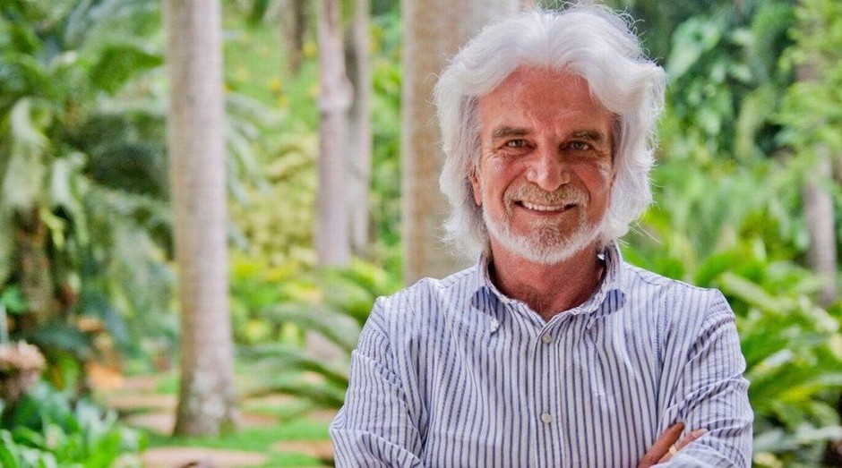

O Instituto Inhotim é um museu de arte contemporânea e Jardim Botânico, localizado em Brumadinho (MG). O Inhotim é uma entidade privada, sem fins lucrativos, mantida com recursos de doações de pessoas físicas e jurídicas – diretas ou por meio das Leis Federal e Estadual de Incentivo à Cultura – , pela bilheteria e realização de eventos. Idealizado desde a década de 1980 pelo empresário mineiro Bernardo de Mello Paz, do solo ferroso de uma fazenda da região nasceu, em 2006, um dos maiores museus a céu aberto do mundo.
Sua localização privilegiada – entre os ricos biomas da Mata Atlântica e do Cerrado –, e as paisagens exuberantes ao longo dos 140 hectares de visitação proporcionam aos visitantes uma experiência única que mescla arte e natureza. Cerca de 1.862 obras de mais de 280 artistas, de 43 países, compõem o acervo e são exibidas ao ar livre e em galerias em meio a um Jardim Botânico com mais de 4,3 mil espécies botânicas raras, vindas de todos os continentes.
Ao todo, cerca de 700 obras são exibidas ao ar livre e em galerias em meio ao Jardim Botânico. Ufa! É obra que não acaba mais!
Visitar o museu é sempre uma nova experiência, já que, além das famosas exposições permanentes, existem as temporárias, que levam um frescor de novidade para o lugar.
Existem também diversas outras dispostas nos jardins. Afinal, esse é o maior museu a céu aberto do mundo. É comum passear pelo espaço e se deparar com arte por todo canto.
A arte contemporânea pode ser qualquer produção artística da atualidade que se desconecta dos padrões artísticos anteriores. Ela é subjetiva e original, priorizando a liberdade criativa do artista.
Como mencionado, o Inhotim conta com cerca de 700 obras desse gênero, contemplando diferentes formas de expressão, como esculturas, pinturas, fotografias, projeções e performances.
É arte para todos os gostos!
Há inúmeros fatores que tornam o Museu do Inhotim uma atração turística única. Não por acaso, o espaço recebe, anualmente, milhares de visitantes de todos os lugares do Brasil e do mundo.
Para se ter uma ideia, somente em 2019, foram contabilizados 267.932 de visitantes, segundo o relatório institucional do Inhotim. Além disso, cerca de 3 milhões de pessoas já passaram por lá, desde 2006.
As paisagens exuberantes do Inhotim, ocasionalmente, sediam eventos culturais de diversos tipos. O museu vira palco para apresentações de balé, concertos musicais e festivais, que ocupam os jardins e recebem milhares de pessoas.
Nesse sentido, o espaço recebe shows, palestras, workshops, exposições, entre outras atividades e experiências.
Vale ressaltar que os ingressos para os eventos que acontecem no Inhotim são vendidos separadamente, não sendo os mesmos das entradas no museu em dias comuns.
O Inhotim oferece ainda pontos de alimentação distribuídos em meio às exposições, servindo almoço, lanche ou apenas uma pausa para descanso. Afinal, quando bater aquela fominha é importante ter para onde correr, não é mesmo?
O instituto oferece algumas opções de restaurantes, que atendem diferentes gostos e bolsos. O visitante pode escolher entre cafeterias, hamburgueria, pizzaria ou casa de sucos
Como opção para uma refeição completa, existe o Restaurante Oiticica, que serve comida brasileira em um buffet self-service. Ainda, outra alternativa é o Restaurante Tamboril, que oferece culinária sofisticada, atendendo os paladares mais exigentes.
Bernardo de Mello Paz
